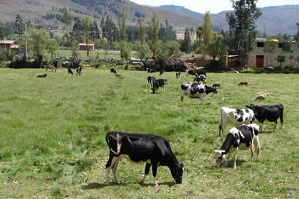
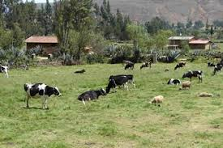
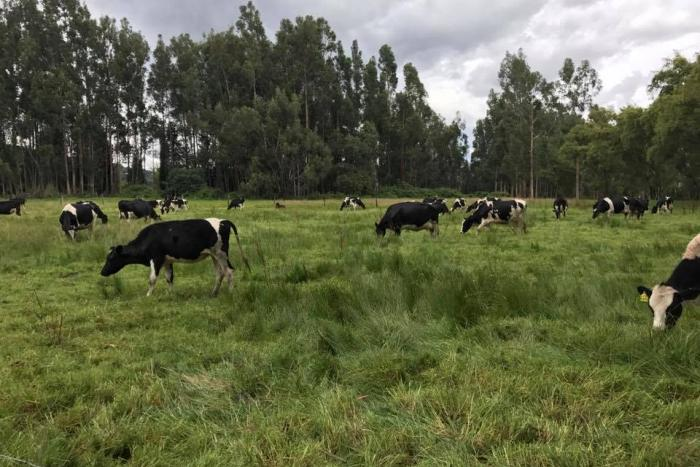
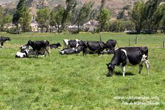
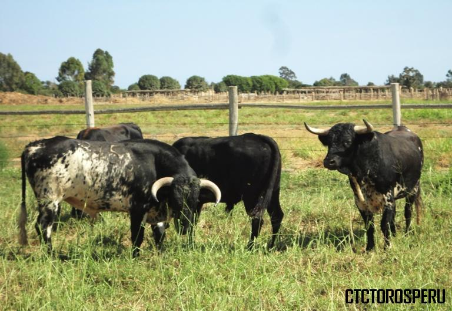

CONTENIDO PRINCIPAL
¿QUÉ ES LA GANADERÍA?
La ganadería es una actividad económica de origen muy antiguo que consiste en el manejo y explotación de animales domesticables con fines de producción, para su aprovechamiento (véase industria láctea, avicultura, porcicultura). En cambio,
el manejo de animales pertenecientes a especies silvestres (no domésticas) en cautiverio o en semicautiverio se conoce con el nombre de zoocría. Los ganados más importantes en número a nivel mundial son los relacionados con la ganadería
bovina, la ovina y la porcina. Sin embargo, en algunas regiones del planeta otros tipos de ganado tienen mayor importancia, como el caprino y el equino, como así también la cunicultura, la avicultura y la apicultura.La ganadería está
relacionada con la agricultura, ya que en una granja ambas pueden estar relacionadas. En estos casos el ganado aporta el estiércol, que es utilizado como abono, y los cultivos aportan el alimento para los animales.
It's dangerous to go alone, take this.
NOVEDADES DE LA GANADERÍA EN CAJAMARCA

LA GANADERIA EN CAJAMARCA Y SU PRODUCCION LECHERA.
Cajamarca, cuenta con una diversidad ecológica que ha permitido que en toda su extensión se instalen centros de cría de ganado lechero de razas Holstein y Brown Swiss en los valles.

EMPRESA GLORIA EMPEZÓ CON EL RECOJO DE LECHE DESDE EL
20/06/2018 .
Nestlé, por su parte, se comprometió a pagar a sus proveedores hasta el 26 de marzo aun cuando no se ha realizado el acopio de leche.

Minagri: Dirección General de Ganadería apoyará a pequeños productores.
El ministro de Agricultura y Riego, José Hernández, anunció la creación de la Dirección General de Ganadería (DGG) para promover el desarrollo del sector ganadero nacional.
Ganaderos aprenden de crianza y mejoramiento genético.
Más de 90 pequeños ganaderos fueron capacitados en crianza responsable del ganado y mejoramiento genético.

This is a card.
It has an easy to override visual style, and is appropriately subdued.

This is a card.
It has an easy to override visual style, and is appropriately subdued.